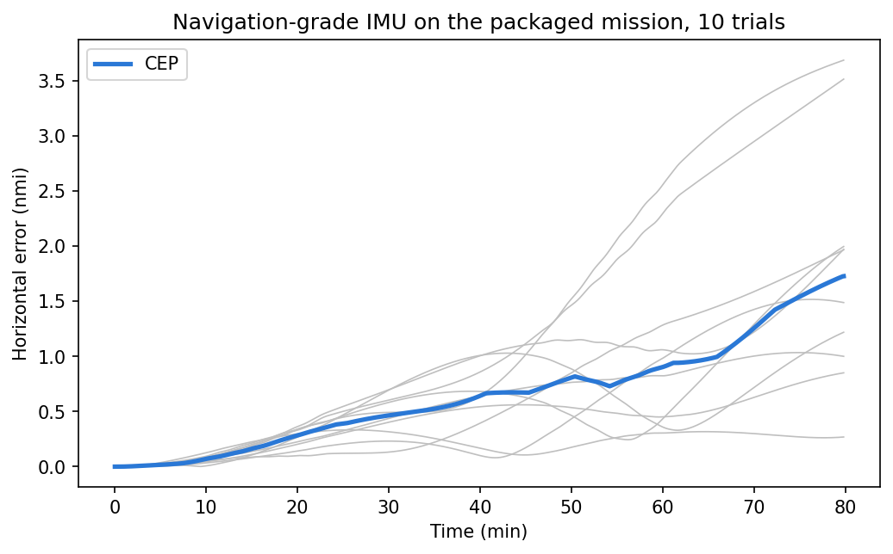

Your first script¶
The desktop app is a thin layer over a Python package, and everything it does you can do from a script. This tutorial repeats Your first simulation in about 30 lines of Python: build the truth, load the IMU spec, run the Monte Carlo trials, measure the position error and plot it. You get the same numbers as the app.
Install the package¶
You need Python 3.11 or later. Get the source and install it:
git clone https://github.com/jorgieo/ins_sim.git
cd ins_sim
pip install -e .
The -e keeps the installation linked to the folder, so a later
git pull updates it. Scripts do not need the desktop app's gui extra.
The script¶
Save this as first_script.py anywhere and run it with
python first_script.py:
"""Your first script: a Monte Carlo run on the packaged mission, step by step."""
import matplotlib.pyplot as plt
import numpy as np
from ins_sim.config import default_imu_spec_path, default_trajectory_path
from ins_sim.evaluation.errors import position_error
from ins_sim.evaluation.monte_carlo import run_monte_carlo
from ins_sim.sensors.imu import load_imu_spec
from ins_sim.trajectory.kinematics import build_trajectory
# 1. The truth: the packaged mission, sampled every second.
truth, _, _ = build_trajectory(str(default_trajectory_path()), tau_i=1.0)
print(f"Mission: {truth.t[-1] / 60:.1f} min, {len(truth.t)} samples")
# 2. The IMU: the packaged navigation-grade spec, converted to SI units.
spec = load_imu_spec(str(default_imu_spec_path()))
print(f"Gyro bias instability: {np.rad2deg(spec.gyro_bias_instability) * 3600:.3f} deg/h")
# 3. Ten trials, each with its own draw of every sensor error.
mc = run_monte_carlo(truth, spec, n_trials=10, seed=42)
# 4. Position error, estimate minus truth, in metres along North, East, Down.
delta_r_eb_n = position_error(mc.est_L_b, mc.est_lambda_b, mc.est_h_b,
truth.L_b, truth.lambda_b, truth.h_b)
horizontal = np.hypot(delta_r_eb_n[..., 0], delta_r_eb_n[..., 1]) # (trials, samples)
cep = np.median(horizontal, axis=0)
one_hour = np.searchsorted(truth.t, 3600.0)
print(f"CEP after 1 h: {cep[one_hour] / 1852:.2f} nmi")
# 5. Every trial's horizontal error, and their median, the CEP.
fig, ax = plt.subplots(figsize=(8, 4.5))
ax.plot(truth.t / 60, horizontal.T / 1852, color="0.75", linewidth=0.8)
ax.plot(truth.t / 60, cep / 1852, color="#2a78d6", linewidth=2.5, label="CEP")
ax.set(xlabel="Time (min)", ylabel="Horizontal error (nmi)",
title="Navigation-grade IMU on the packaged mission, 10 trials")
ax.legend(loc="upper left")
fig.savefig("first_script.png", dpi=150, bbox_inches="tight")
print("Saved first_script.png")
It prints:
Mission: 79.8 min, 4791 samples
Gyro bias instability: 0.010 deg/h
CEP after 1 h: 0.90 nmi
Saved first_script.png
and saves the plot shown at the end of this page. The rest of the page goes through it step by step.
Step by step¶
1. The truth¶
# 1. The truth: the packaged mission, sampled every second.
truth, _, _ = build_trajectory(str(default_trajectory_path()), tau_i=1.0)
print(f"Mission: {truth.t[-1] / 60:.1f} min, {len(truth.t)} samples")
build_trajectory reads the mission file and flies it, phase by phase,
sampling the result every tau_i seconds: here once a second, like the
app's Time step of 1.00 s. The truth it returns holds, at each of the
4,791 samples, the true position, velocity and attitude, and the outputs a
perfect IMU would give along the way. The other two values it returns,
ignored here, describe the mission's sprint speed and turn radius.
2. The IMU spec¶
# 2. The IMU: the packaged navigation-grade spec, converted to SI units.
spec = load_imu_spec(str(default_imu_spec_path()))
print(f"Gyro bias instability: {np.rad2deg(spec.gyro_bias_instability) * 3600:.3f} deg/h")
load_imu_spec reads the YAML file, which is written in datasheet units,
and converts every value to SI. The bias instability, entered as
0.01 °/h, is held in rad/s; the script converts it back to check.
3. The Monte Carlo run¶
# 3. Ten trials, each with its own draw of every sensor error.
mc = run_monte_carlo(truth, spec, n_trials=10, seed=42)
Each trial draws its own set of sensor errors, corrupts the perfect IMU
outputs with them, and runs the strapdown navigator from the true starting
point, with a drawn alignment error. The result holds every trial's
estimates: mc.est_L_b is the estimated latitude, an array of shape
(10, 4791), one row per trial. This step takes about ten seconds.
The seed fixes the random draws, so the run is repeatable. The app uses
42 as well, which is why this script reproduces its results.
4. The position error¶
# 4. Position error, estimate minus truth, in metres along North, East, Down.
delta_r_eb_n = position_error(mc.est_L_b, mc.est_lambda_b, mc.est_h_b,
truth.L_b, truth.lambda_b, truth.h_b)
horizontal = np.hypot(delta_r_eb_n[..., 0], delta_r_eb_n[..., 1]) # (trials, samples)
cep = np.median(horizontal, axis=0)
one_hour = np.searchsorted(truth.t, 3600.0)
print(f"CEP after 1 h: {cep[one_hour] / 1852:.2f} nmi")
position_error subtracts the truth from each estimate and converts the
latitude, longitude and height differences to metres along North, East and
Down. The horizontal error is the length of the North and East components,
and its median across the trials at each moment is the CEP. After one hour
it is 0.90 nmi, the same as in the app's CEP table.
5. The plot¶
# 5. Every trial's horizontal error, and their median, the CEP.
fig, ax = plt.subplots(figsize=(8, 4.5))
ax.plot(truth.t / 60, horizontal.T / 1852, color="0.75", linewidth=0.8)
ax.plot(truth.t / 60, cep / 1852, color="#2a78d6", linewidth=2.5, label="CEP")
ax.set(xlabel="Time (min)", ylabel="Horizontal error (nmi)",
title="Navigation-grade IMU on the packaged mission, 10 trials")
ax.legend(loc="upper left")
fig.savefig("first_script.png", dpi=150, bbox_inches="tight")
print("Saved first_script.png")

Like the app's CEP tab, the plot shows each trial in grey and their median in blue.
Names that look like symbols¶
The variables follow the textbook symbols on the
Notation & conventions page: L_b is the latitude
\(L_b\), and delta_r_eb_n is the position error
\(\delta\rvec{eb}{n}\). A prefix gives a value's role: est_ for the
navigator's estimate, meas_ for a sensor output and delta_ for an
error, always the estimate minus the truth.
Next steps¶
- The Python API documents every function, with its arguments' units and shapes.
- Recipes builds on this script: comparing IMUs and finding the error source that dominates.
- Modelling an IMU and Writing a mission explain the two input files.